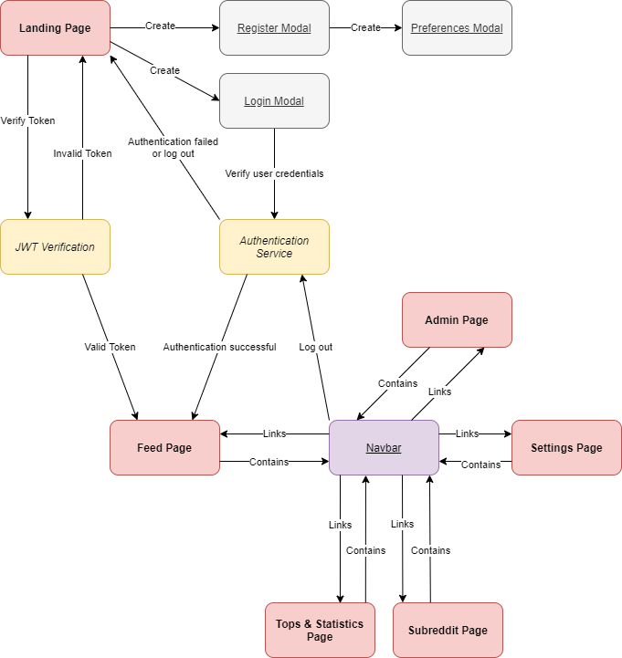

redDat
Table of contents
1. Introduction
1.1. Purpose
In the Information Age, data is no longer scarce – it’s overpowering. The key is to browse through the overwhelming volume of data available and correctly interpret its implications. But to sort through all this information, you need the right statistical data analysis tools. This is why we created redDat. It is a tool that provides statistical data about any subreddit, in a format that is easy to read.
1.2 Intended audience
Both normal Reddit users and subreddit moderators are the main target audience, but other people who are interested in statistical data about certain subreddits can also make use of our website too.
2. Overall description
2.1 Product functions
redDat's main statistical analysis features are:
- Displaying a feed of data about the most relevant subreddits according to the user's selected preferences
- Displaying detailed information about specific subreddits
- Displaying rankings of all the subreddits, in multiple categories
- Searching for detailed statistics of a particular subreddit
- Subscribing to certain subreddits to receive notifications about new posts on them
2.2 Types of users
redDat allows the existence of two types of users:
- Regular users, who can access all the described features.
- Admin users, who, besides the options of the regular user, can directly manipulate de data from the database
2.3 Operating environment
The application will run in a browser, on both descktop and mobile platforms, on Windows, Linux, Android, iOS.
3. Frontend Structure
3.1 Technologies
For the frontend part of the project we used HTML5, CSS3 and JavaScript.
3.2 Pages
Landing Page
This is the first page that the user will see. Here they can choose to create an account or log in with an already existing one. After creating an account, they are presented with a modal where they can add their preferences. Those can later be changed in the settings.
Feed Page
After logging in, the user will be redirected to the feed page. Here they will see a list of subreddits relevant to their choice of preferences made prior. Clicking on the "Toggle detailed mode" will switch between a simplified view, which only shows the icon and the name of each subreddit, and a more complex view which will give more information about each subreddit. Clicking on a subreddit will redirect the user to the page of that subreddit.
Tops & Statistics Page
This page contains a selection of tops of subreddits, each with a different category. There are tops for how many subscribers a subreddit has, how many posts they have and more. At the bottom of the page there are graphs which are visualizations of some of the tops above them.
Subreddit Page
The subreddit will provide the user with tons of information about the clicked subreddit. They can see the thumbnail and the banner of the subreddit, its description and its title. Below that there are statistics about different aspects of the subreddit, such as how many new subscribers it has gained in the last day, how many new comments were made since yesterday and more. After that are a number of tops which show the best posts based on their age. The user can see the best posts of the past hour, past day or all time. At the bottom of the page there is a graph which indicates the number of comments among the first 26 reddit posts on the current subreddit, and a pie chart showing the percentage of upvote ratios among the first 26 reddit posts on the current subreddit. Lastly, if a user is interested in news about a subreddit (new posts), they can subscribe to it by clicking the bell icon next to their title at the top of the page. Subscriptions can be managed in the settings.
Settings Page
In the settings page the user can tweak their preferences and subcriptions by adding new ones and removing existing ones.
Admin Page
The admin page is only accessible to the admins, which are strictly created by the developers of redDat. Here they can see a list of the 10 most popular subjects (user preferences) and the 10 most subscribed subreddits. Beneath that there is a list of users, which presents the admin with a number of options. They can promote/demote an user to/from the status of admin, they can delete an user, they can see and delete any of their preferences or subscriptions. At the bottom of the page there are three buttons. One will wipe the user database, another one will wipe the database which holds all the information about the recorded subreddits and the last button will force an update of the subreddit database.
4. Backend Structure
4.1 Technologies
For the backend part of the project we used
- NodeJS was used to implement most features of the main server and microservices.
- MySQL was used as the database server. We chose to use relational databases due to their performant search.
- socket.io was used to implement the notifications feature. We chose to use WebScoket due to its ability to communicate bidirectionally and asynchronously.
- JWT was used for authentication.
- Reddit API was used for the retrieval of data about reddit.com
4.2 Microservices
We structured our project around 3 microservices and a main server. This approach bring many advantages over structuring the application as a monolith, mainly the ability to scale easily and reduced impact of outages, as the other microservices continue to work as expected, even if one fails. Our services are:
- The main server - acts as a gateway for the microservices and handles static file retrieval
- The users microservice - handles authentication and authorization, user CRUD operations and admin operations
- The statistics microservice - handles the retrieval and calculation of statistics and creation of charts based on them
- The notifications microservice - handles subscriptions and sends notifications based on them; also watches a list of subreddits and retrieves the newest posts for the notifications
Main server
When a request first arrives to the main server, it has to be authorized. The JWT in the cookies is checked and the request is not solved if the token is not valid and the request is for a non-public resource. Then, if the request is for a static file, it is served, otherwise it is redirected to the microservice that will hadle the request.
Users microservice
This service is responsible for the administration of user data. It handles account creation and login for users, generating the token on a successful login. User preferences and subscriptions are also persisted in the database through this microservice. In addition, administrator commands are handled here, with additional checks that the user sending the request had the rights needed for the operations.
Statistics microservice
This is the central part of the application. Depending on the request, the service queries the reddit API for live data, or our own database for historical data. Then, the data requested is processed and the necesarry statistics or charts are built. For the population of the database, a script that makes multiple requests to the reddit API was used. It reads the list of subreddits from the database and makes requests for the newest posts. Then, partitions then in 1-hour-long intervals and inserts the hourly data into the database. For the best statistics, this script should be run once every hour and collect the data from the last hour.
Notifications microservice
Live notifications for new posts are handled by this service. In order to be able to send the notifications in real time, we used WebSockets. New posts are retrieved by a watcher that acts as another socket.io client and are sent to the users by the server that acts as a middle-man. The communication is made through 3 types of messages:
- Subscribe [subreddit list] -> the client sends this message to the server, that forwards it to the watcher in order to update its list of watched subreddits. By sending this message the client automatically joins the socket.io "rooms" of the subreddits in the list.
- Unsubscribe [subreddit list] -> the client sends this message to the server, that forwards it to the watcher in order to update its list of watched subreddits. It is also automatically sent by the server when a client disconnects. By sending this message the client automatically leaves the socket.io "rooms" of the subreddits in the list.
- Post [post object] -> the watcher sends this message to the server when it discovers a new post in one of the watched subreddits. The server then broadcasts it to all clients in the room of the subreddit. Then the client sends the notification through the browser's API.
5. Communication
Client-server communication is mainly done through HTTP requests to the internal API and public REST services. Requests pass through the main server that either serves a static file, or forwards the request to the matching microservice and sends back the response after it is received from the microservice. Pages are dynamically built throgh AJAX calls to the server based on query parameters and user input. Subreddit subscriptions are sent to the server through WebSockets and post notifications are sent to socket.io "rooms" of clients that are subscribed to the subreddit corresponing to the new post.
6. Tasks
Vlad Teodorescu
His main area of tasks was strcturing the server properly, interaction with the reddit API and communication:
- Reddit API research
- JWT based authentication
- Reddit API integration
- Database setup
- Reddit statistics database
- Reddit statistics builder script
- Server-side of the websocket connection
- Reddit new posts watchet
- Organizing the project as microservices
- User input validation framework
- Utility functions for easier usage of requests and responses
- The subreddit public API
Andrei Zaborilă
His main area of tasks was integration with the frontend and some features on the backend:
- Reddit API research
- Initial server and routes setup
- Preliminary MVC structuring of the server
- Admin functionality
- Admin page
- Parts based backend rendering of the HTML pages
- Preferences functionality
- Login and Register
- Client-side of the websocket connection
- The user public API
- Subscriptions functionality
- Settings page
Maria Olariu
Her main task was implementing the graphs to display the statistics in an easier to understand way:
- Server-side creation of graphs
- Bar charts
- Pie charts